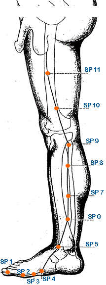
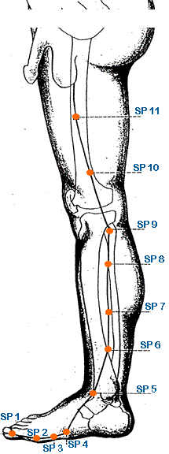

|
Meridian Point : SP-1
Location: On the medial side of the big toe .1 cun posterior to the corner of the nail
English Name: Hidden White
Pinyin Name: Yinbai
Actions & Effect:
Any Bleeding Issues, esp. from SP Deficiency - reckless bleeding, hemorrhage, blood in the urine/stools.
Emotional issues esp. with aspects of worry - worried dreams, depression.
Possibly useful for eating disorders originating from stress/worry.
Disease
Unconsciousness, convulsion, menorrhagia, bloody stools, psychosis, nightmares
Meridian Point : SP-2
Location: On medial side of big toe, sital and inferior to the 1st metatarsaldigital joint in a depression at the juncture of the red and white skin.
English Name: Great Metropolis
Pinyin Name: Dadu
Actions & Effect:
Generally used to clear damp-heat - gout, painful obstructions.
Local point for issues with the big toe.
With SP 3 tonify SP organ - abdominal distention, diarrhea and/or heart pain.
Disease
Gastric pain, diarrhea, constipation, vomiting
Meridian Point : SP-3
Location: Proximal and inferior to the head of the 1st metatarsalphalangeal joint in a depression at the junction of the red and white skin.
English Name: Supreme White
Pinyin Name: San Jian
Actions & Effect:
SP Qi and Yang Deficiency, especially those with excess pathologies - abdominal a/or epigastric pain, digestive issues, heart pain.
Muscle atrophy in the lower legs, heaviness in the body.
Disease
Gastric pain, abdominal pain, diarrhea, heavyness of the body, pain of joints
Meridian Point : SP-4
Location: In a depression distal and inferior to the base of the 1st metatarsal bone at the junction of the red and white skin.
English Name: Yellow Emperor
Pinyin Name: Gongsun
Actions & Effect:
Excess pathologies of the ST and Intestines - severe abdominal a/or epigastric pain, dysentery, food poisoning.
Gynecological and Abdominal issues due to stagnation of Qi and Blood - masses, fibroids, cysts, irregular menstruation.
With PC 6 for chest and heart pain, shen disorders, sighing, anxiety, insomnia, nervousness.
Disease
Abdominal distention, acute and chronic stomachache, vomiting, insomnia
Meridian Point : SP-5
Location: In a depression distal and inferior to the medial malleolus midway between the tuberosity of the navicular bone and the tip of the medial malleolus.
English Name: Shang Hill
Pinyin Name: Shangqiu
Actions & Effect:
Tonifies the spleen and resolves dampness - lethargy, desire to lie down, abdominal distention.
Calms the spirit - manic depression, anxiety, excessive thinking.
Speech disorders, stiffness at root of tongue.
Disease
Abdominal distention, pain in the foot and ankle, hemorrhoids, diarrhea, constipation, jaundice
Meridian Point : SP-6
Location: 3 cun directly above the tip of the medial malleoulus on the posterior border of the tibia.
English Name: Three Yin Intersection
Pinyin Name: Sanyinjiao
Actions & Effect:
Tonify Yin and Blood, all Spleen disorders.
Digestive disorders, sinking/prolapse.
Gynecological issues, male sexual issues, difficult labor (expel fetus).
Menstrual issues (irregular, amenorrhea, dysmenorrhea).
Bleeding disorders, uterine bleeding, cool blood in hot skin diseases.
Insomnia, palpitations, and other anxiety related emotions.
Dizziness, hypertension.
Disease
Irregular menstruation, dysmenorrhea, premature ejaculation, pain in the penis, hernia, testicular atrophy, abdominal distention, diarrhea, paralysis of the foot, muscular pain, diseases of the skin, urticaria, insomnia, headache, dizziness
Meridian Point : SP-7
Location:6 cun above the tip of the medial malleolus on line connecting SP 9 and the tip of the medial malleolus on the posterior border of the tibia (3 cun above SP 6).
English Name: Leaking Valley
Pinyin Name: Lougu
Actions & Effect:
Local point.
Continued muscle atrophy in the presence of adequate nutrition.
Promotes urination - difficult urination.
Resolves dampness - lower body swelling, ankle, knee.
Disease
Abdominal distention, numbness of the lower extremities
Meridian Point : SP-8
Location: 3 cun below SP 9 on line connecting SP 9 and the tip of the medial malleolus.
English Name: Earth's Crux
Pinyin Name: Diji
Actions & Effect:
Xi Cleft Point - acute and painful menstrual issues due to Blood stagnation - clotting, fibroids, dysmenorrhea, irregular menstruation.
Male infertility - seminal emission, depleted essence.
Disease
Abdominal pain, diarrhea, dysuria, edema, irregular menstruation, dysmenorrhea, spermatorrhea, impotence, lumbar pain
Meridian Point : SP-9
Location:On the lower border of the medial condyle of the tibia in the depression posterior and inferior to the medial condyle of the tibia. (or) On the lower border of the medial condyle of the tibia on level with the tuberosity of the tibia. (or) Between the posterior border of the tibia and gastrocnemius muscle.
English Name: Yin Mound Spring
Pinyin Name:Yinlingquan
Actions & Effect:
He Sea point - drains dampness (generally through urination), LV 8 will drain damp from the genital region and SP 9 will drain damp from the lower warmer.
Chronic yeast infections, candida.
Damp Bi, Medial Knee Pain.
Issues involving damp-heat in the GB - hepatitis, jaundice.
Tong Ren/Tam Healing System: Any water issue in the body (bloating, swelling, urinary issues, dry mouth, etc.).
Disease
Abdominal pain, abdominal distention, incontinence of urine, diarrhea, jaundice
Meridian Point : SP-10
Location:With knee flexed, 2 cun above the superior medial border of the patella on the bulge of the medial portion of quadriceps femoris (vastus medialis).
English Name:Sea of Blood
Pinyin Name: Xuehai
Actions & Effect:
Any Gynecological issues originating from Blood, Heat, Stasis a/or Deficiency - irregular menstruation, dysmenorrhea, amenorrhea, cramping, lin disorders, PMS, uterine bleeding.
Skin problems from damp-heat or hot Blood - eczema, painful/hot sores.
Genital issues - pain/swelling/itching of the scrotum/genitals.
Tong Ren/Tam Healing System: Any blood issues, although the huatuo of T1 and T7 are used more often.
Disease
Gynecological problems, menstruation problems, eczema
Meridian Point : SP-11
Location: 6 cun above SP 10 on the line connecting SP 12 to SP 10.
English Name: Winnower Gate
Pinyin Name: Jimen
Actions & Effect:
Used for a variety of urinary issues related to a collection of dampness/damp-heat - difficult urination/obstruction, retention of urine.
Swelling in the groin, pain/itching of the external genitalia.
Disease
Inguinal region pain
Meridian Point : SP-12
Location:Superior to the lateral end of the inguinal groove lateral to the pulsating external iliac artery (joins femoral artery) level with the symphysis pubis 3.5 cun lateral to CV 2.
English Name: Surging Gate
Pinyin Name:Chongmen
Actions & Effect:
Used for a variety of urinary disorders (retention, painful) due to it's functions of draining dampness, clearing heat and regulating urination.
Abdominal pain, hernia, hemorrhoids by regulating qi and invigorating blood.
Disease
Lower abdominal pain, hernia, irregular menstruation
Meridian Point : SP-13
Location:.7 cun laterosuperior to SP 12 and 4 cun lateral to the anterior midline (between CV 2 and CV 3).
English Name: Bowel Abode
Pinyin Name: Fushe
Actions & Effect:
Abdominal pain, abdominal masses (fibroids, cysts, etc.), hernia, thigh pain - regulates the liver, qi, and alleviates pain.
Disease
Diarrhea, constipation, hernia
Meridian Point : SP-14
Location:1.3 cun below SP 15 and 4 cun lateral to the anterior midline on the lateral side of rectus abdominus.
English Name: Abdominal Bind
Pinyin Name: Fujie
Actions & Effect:
Warms the middle warmer and dissipates cold for lower abdominal pain, diarrhea (from cold), abdominal pain, constipation.
Resolves counterflow qi - can be used to subdue fright (i.e. panic attacks) from counterflow qi disrupting the heart and/or cough from counterflow qi disrupting the lung.
Disease
Diarrhea, constipation, hernia
Meridian Point : SP-15
Location:4 cun lateral to the center of the umbilicus (CV 8) lateral to rectus abdominus.
English Name: Great Horizontal
Pinyin Name: Daheng
Actions & Effect:
Regulate the Qi of the Intestines - constipation, diarrhea (ST 25 better for diarrhea), abdominal pain and distention.
Disease
Diarrhea, constipation, abdominal pain
Meridian Point : SP-16
Location:3 cun above SP 15 and 4 cun lateral to the anterior midline (CV 11).
English Name: Abdominal Lament
Pinyin Name: Fuai
Actions & Effect:
Aids intestinal issues by clearing heat in the intestines and resolving dampness - as well as generally moving the intestines.
Noted for undigested food in the stool.
Abdominal pain, dysentery, blood in the stool.
Disease
Abdominal pain
Meridian Point : SP-17
Location:6 cun lateral to the anterior midline in the 5th inter-costal space.
English Name: Food Hole
Pinyin Name: Shidou
Actions & Effect:
Promotes smooth spleen qi (digestion), moves water stagnation - fullness of the chest and/or lateral costal region, abdominal distention perhaps with water swelling, belching, vomiting after eating, boborygmus.
Disease
Pain in the chest, hypochondrium, nausea, vomiting, jaundice
Meridian Point : SP-18
Location:6 cun lateral to the anterior midline in the 4th inter-costal space.
English Name: Celestial Ravine
Pinyin Name: Tianxi
Actions & Effect:
Descends qi - chest oppression, shortness of breath, cough, hiccup, running piglet disorder.
Opens the chest and circulation in the breasts - breast pain, insufficient lactation.
Disease
Pain in the chest
Meridian Point : SP-19
Location: 6 cun lateral to the anterior midline in the 3rd inter-costal space.
English Name: Chest Village
Pinyin Name: Xiongxiang
Actions & Effect:
Aids the descent of lung qi - cough.
Regulate lung qi - shortness of breath, chest oppression.
Disease
Pain in the chest
Meridian Point : SP-20
Location: 6 cun lateral to the anterior midline in the 2nd inter-costal space.
English Name: All-Round Flourishing
Pinyin Name: Zhourong
Actions & Effect:
Aids the descent of lung qi - cough, shortness of breath, chest oppression.
Noted for difficulty in ingesting foods.
Disease
Cough
Meridian Point : SP-21
Location:On lateral side of the chest and on the mid-axillary line in the 6th inter-costal space. (or) 6 cun below the axilla midway between the axilla and the free end of the 11th rib on mid axillary.
English Name: Great Embracement
Pinyin Name: Dabao
Actions & Effect:
Mentioned classically that when this point is deficient, all the joints are flaccid, and when excess, pain all over the body.
Pain of the thoracic region.
Descends lung qi - cough, chest oppression, shortness of breath.
Disease
Chest pain, cough, asthma, aching and weakness of the limbs
|